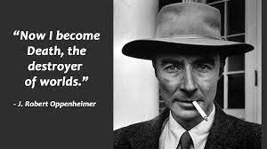

J. Robert Oppenheimer
American theoretical physicist and science administrator, noted as director of the Los Alamos Laboratory (1943–45) during development of the atomic bomb and as director of the Institute for Advanced Study, Princeton (1947–66).
Biography:
- 1904 - Born on April 22 in New York, New York, U.S., to a wealthy German immigrant family.
- 1925 - Graduated from Harvard University with excellence in Latin, Greek, physics, and chemistry. Published poetry and studied Eastern philosophy.
- 1927 - Received his doctorate at the University of Göttingen, collaborating with physicists like Niels Bohr and P.A.M. Dirac.
- 1936 - Oppenheimer's interest in politics emerged; he sided with the republic during the Spanish Civil War.
- 1939 - Initiated efforts to harness nuclear energy after the invasion of Poland by Nazi Germany. Joined the Manhattan Project in 1942.
- 1943 - Directed the Los Alamos Laboratory during the Manhattan Project, leading to the first nuclear explosion in 1945.
- 1947 - Became the director of the Institute for Advanced Study, Princeton, contributing to the academic community.
- 1954 - Faced a security hearing due to accusations of associations with communists, resulting in the loss of security clearance.
- 1967 - Passed away on February 18 in Princeton, New Jersey, leaving a lasting impact on science and ethics.
"I am become Death, the destroyer of worlds."
-- J. Robert Oppenheimer, quoting the Bhagavad Gita after witnessing the first nuclear explosion.
Major Topics in His Life:
- Quantum Physics: Oppenheimer's early research focused on energy processes of subatomic particles and groundbreaking work on neutron stars and black holes.
- Political Engagement: Oppenheimer's political interests grew, leading to involvement in anti-fascist organizations and support for the republic during the Spanish Civil War.
- Manhattan Project: Directed the Los Alamos Laboratory during World War II, contributing to the development of the atomic bomb.
- Post-War Academic Leadership: Became the director of the Institute for Advanced Study, Princeton, contributing to the academic and scientific community.
- Security Hearing: Faced a security hearing in 1954, leading to the loss of security clearance amid accusations of associations with communists.